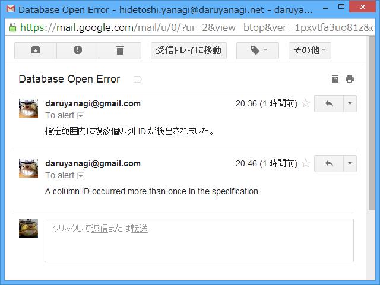

WebMatrix: Gmail 経由でアラートメールを送る
公開日：
Hidetoshi Yanagi（無職） (YanagiHidetoshi) on Twitter に仕掛けておいた Twitter Bot が少しおかしいことに気が付いた。このブログのフィードだけ配信されていない。アプリが吐いたログを見ると、どうやらツイートが長すぎたようだ。修正、修正っと。
で、この問題は解決したのだけど、こういうことはメールでお知らせしてほしいなと思う。WebMatrix/ASP.NET Web Pages では簡単にメールが遅れるので、使わないなんて損だ。
以下は Gmail の SMTP サーバーを利用する場合。最初に WebMail クラスの設定をしておく。
// _AppStart.cshtml@{ WebMail.SmtpServer="smtp.gmail.com"; WebMail.SmtpPort = 587; WebMail.EnableSsl=true; WebMail.UserName=""; WebMail.From="@gmail.com"; WebMail.Password="***"; }
使い方はこんな感じ。
@{
try
{
（なんかエラーの起こりそうな処理）
}
catch (Exception e)
{
WebMail.Send(
to: "***@***.**",
subject: "Error が起こったで！",
body: e.Message
);
}
}

さっそく ALTER TABLE が失敗したメールが来た ／(＾o＾)＼